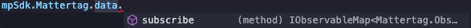

Acquiring the Type Declarations
Our current types are located here
Why Use Types?
Code completion or Intellisense
Make fewer mistakes by using your IDE to suggest the available properties on the sdk.

(Auto-completing with subscribe when typing mpSdk.Mattertag.data.)
Code comments and reference documentation in your IDE
Hover over any property of our sdk (namespace, function, observable, etc) to get access to the same documentation that is available here.
(Hovering mpSdk.Mattertag.data)
Getting Started with Type Declarations
To get started, cast your window to the ShowcaseEmbedWindow and start using the MP_SDK object on it.
import { ShowcaseEmbedWindow } from './mp/sdk';
const showcaseIframe = document.getElementById('showcase-iframe') as HTMLIFrameElement;
const embeddingWindow = window as ShowcaseEmbedWindow;
const mpSdk = await embeddingWindow.MP_SDK.connect(showcaseIframe, '{YOUR SDK KEY}');
// start using mpSdk
mpSdk.Sweep.moveTo('sweep1234', { transition: mpSdk.Sweep.TransitionType.FADEOUT });
Using Individual Namespaces
Once you have your mpSdk object, you’ll likely want to pass it around and/or use other types provided by the sdk.
All namespaces and their types are also available through the root MpSdk type.
// tourControls.ts
import { Tour } from './mp/sdk'
export function startTour(tour: Tour) {
tour.start();
}
// use the Snapshot type through the Tour type
export function getTourSnapshots(tour: Tour): Promise<Tour.Snapshot[]> {
return tour.getData();
}
// index.ts
import { MpSdk } from './mp/sdk';
import { startTour } from './tourControls.ts'
async function useTourControls(mpSdk: MpSdk) {
startTour(mpSdk.Tour);
// use the Snapshot type through the MpSdk type
const tourSnapshots: MpSdk.Tour.Snapshot[] = await getTourSnapshots(mpSdk.Tour);
}